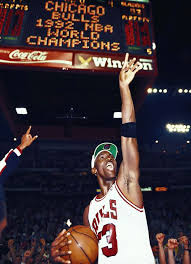
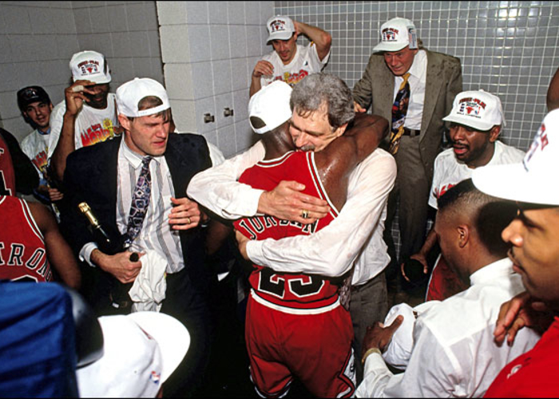

The Chicago Bulls shot out of the gate after barely making the playoffs in the 1989-90 season. The team won a then-franchise record 61 games.
The Bulls then went on to take the playoffs by storm. They defeated the New York Knicks in the first round by sweeping them. Then trounced the 76ers in the east semifinals, then defeated Isiah Thomas' Pistons in the Eastern Conference finals.
The Bulls won the NBA finals that year in five games against Magic Johnson and his Los Angeles Lakers. This is very significant because it was a symbolic transition from Magic being the face of the league to Michael Jordan.
1992

Jordan's Bulls would return in the 1991-1992 season even stronger than before. The team powered through the regular season to yet another franchise record 67 wins.
Come playoffs, the Bulls reign continued. They took out the Miami Heat in three games, the Knicks in seven games, then won the Eastern Conference title by vanquishing the Cleveland Cavaliers in six games.
The NBA Finals in 1992 saw that Jordan's Bulls face against Clyde Drexler and his Portland Trail-Blazers. Jordan lead the Bulls to a repeat championship by defeating the Blazers in six games.
1993

The Bulls in 1992-1993 slowed down a little bit in the regular season. They won 57 games this year, less than the last two championship seasons, meaning they would have the two seed entering the playoffs behind the Knicks. Questions began to mount as to whether they could pull off the 3-peat.
The Playoffs
Eastern Quarterfinals: 2. Bulls vs. 7. Hawks. Bulls would sweep the Hawks in three quick games.
Eastern Semifinals: 2. Bulls vs. 3. Cavaliers. Cavaliers were swept by the mighty Chicago Bulls in four games.
Eastern Finals: 2. Bulls vs. 1. Knicks. The Knicks would jump out of the gate to a quick 2-0 lead, but would go on to lose the next four. The Bulls would enter the NBA Championship series for the third year running.
NBA Finals: 2. Bulls vs. 1. Suns. The Bulls would go on to defeat the Phoenix Suns in six games. This 3-peat was never done by Larry Bird or Magic Johnson, but was completed by Michael Jordan.